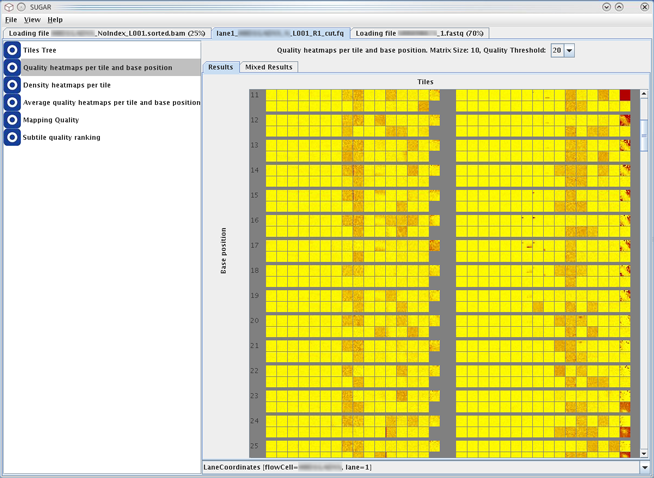

The analysis of SUGAR is performed by a series of analytical modules. In the result screen, a left side panel of the GUI window and HTML report shows the list of modules conducted in the analysis.
Detailed guidances of the SUGAR analytical modules are described in the next section "Analysis Modules" of this Help document.
